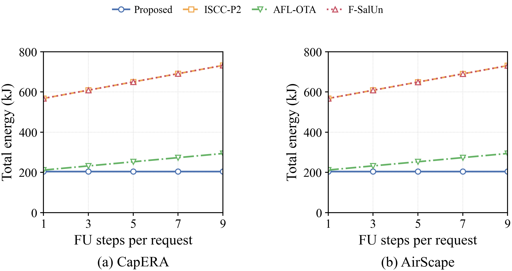
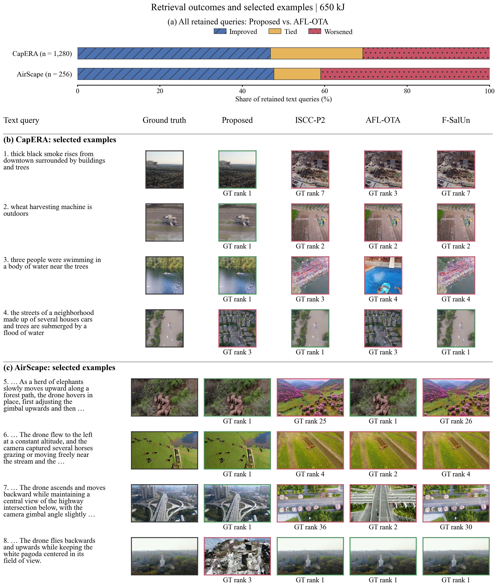
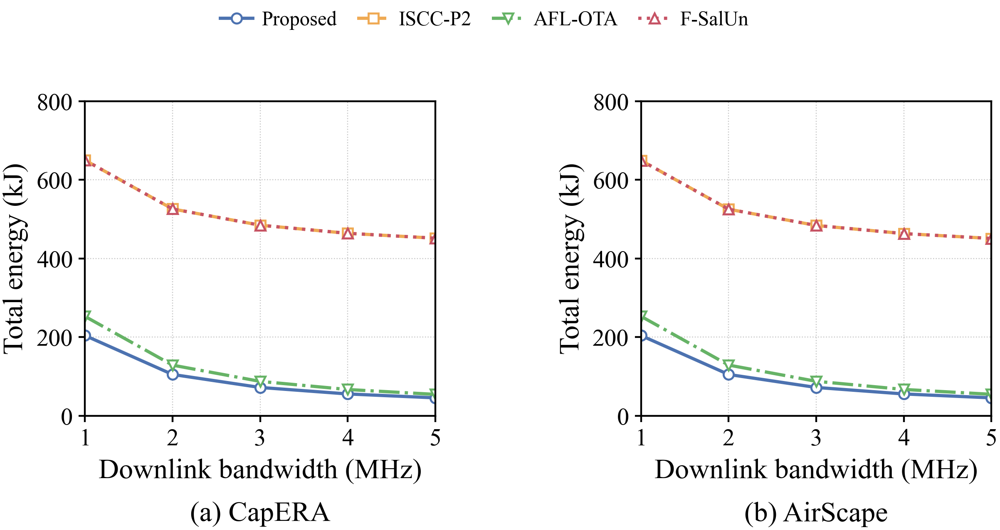
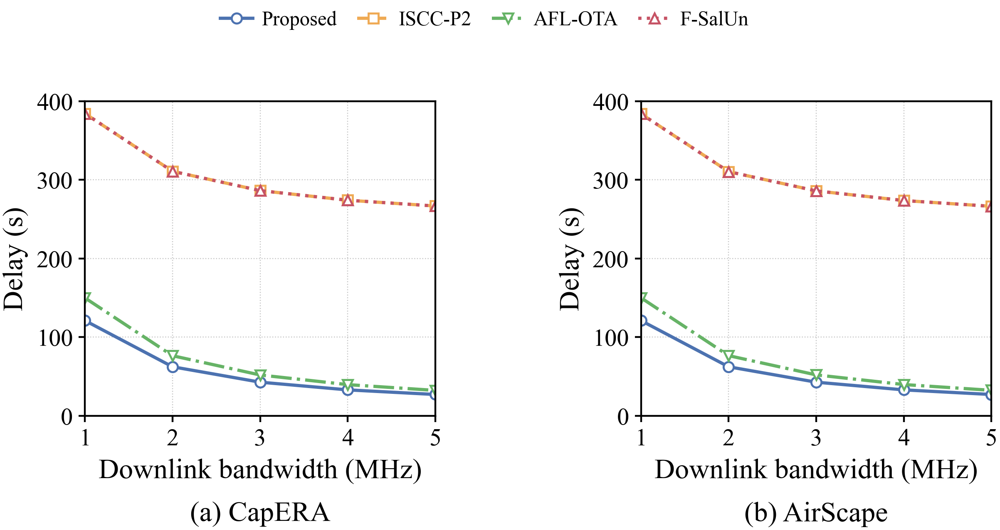
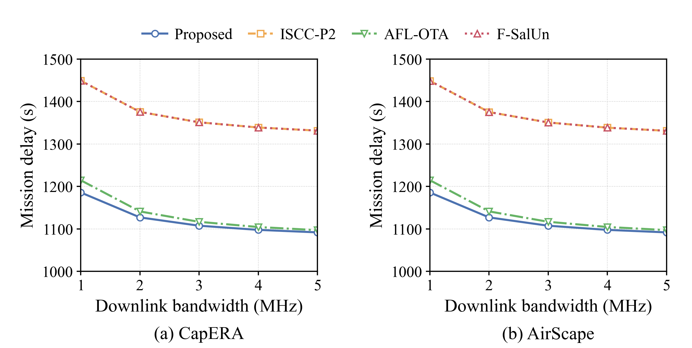
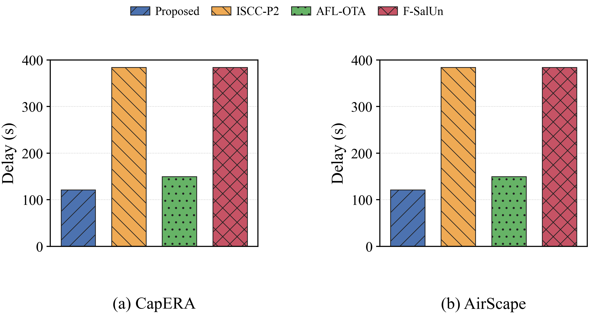
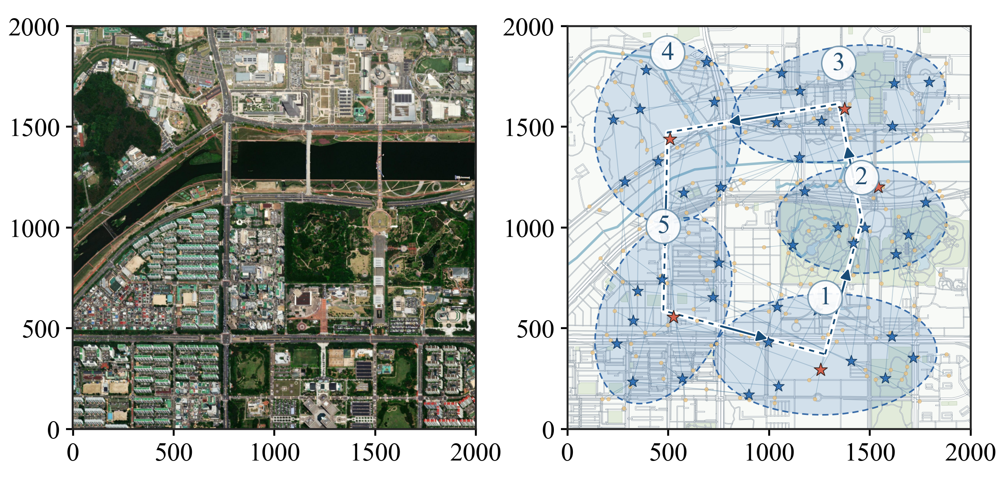
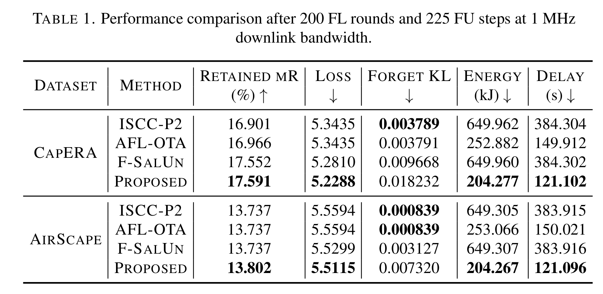
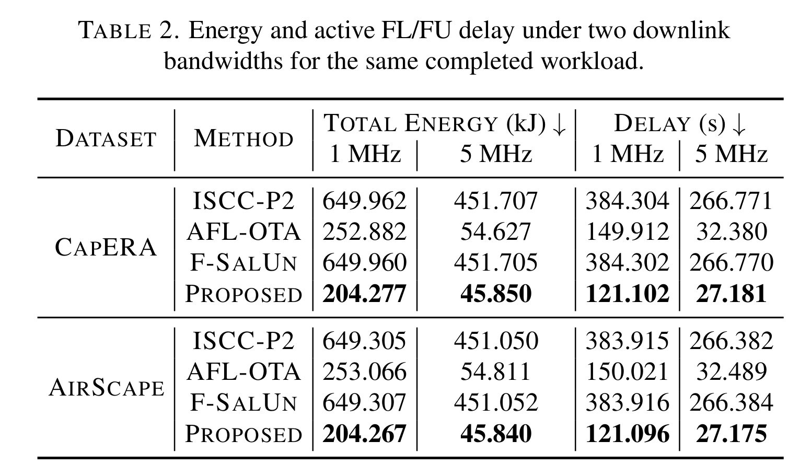
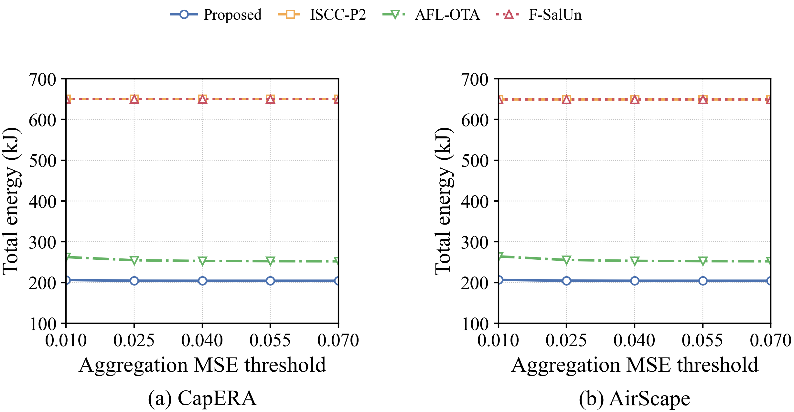

Retained text/video retrieval performance versus cumulative energy

Energy efficiency and actual VLM retrieval: definitions and full numerical results


Downlink bandwidth and MSE sweeps; paired resource bars, map and comparison tables. Definitions and limitations · All metrics · Previous figures








